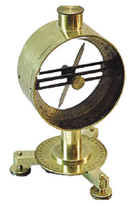
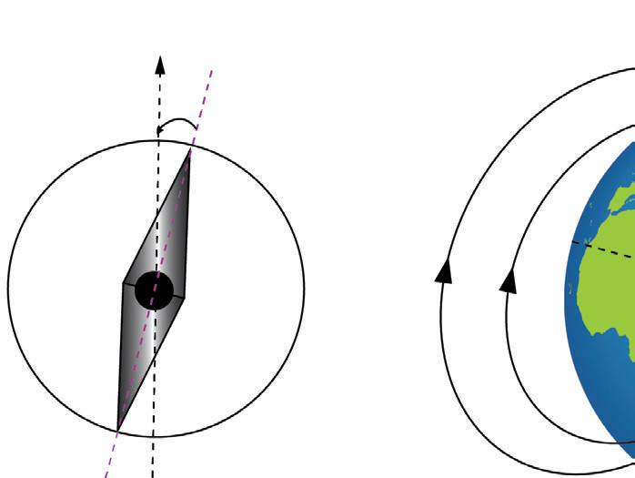
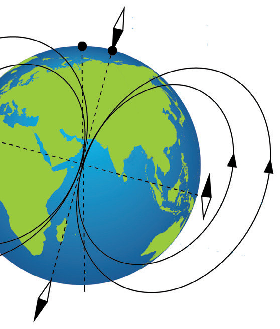

Angle of inclination (dip angle)
If we position a compass on its side so that its needle can rotate within a vertical plane, the needle will align itself with the Earth’s magnetic field.
This angle is positive when the magnetic field vector points downward (as in the Northern Hemisphere) and negative when it points upward (as in the Southern Hemisphere). The angle of inclination ranges from 0° at the magnetic equator to 90° at the magnetic poles. It is measured using a dip needle, which is a magnetised needle mounted on a pivot allowing it to rotate freely in a vertical plane, as shown in Figure 3.53.

In practice, a compass is used to align the dip needle with the horizontal component of the magnetic field, and the dip needle rotates vertically to align with the total field. The magnetic dip produces a vertical moment, causing the needle in a compass to rotate vertically. This produces friction in the pivot, which hinders the free rotation of the needle. To compensate for the dip, a small mass is added to one end of the needle to produce an opposite gravitational moment so as to maintain the needle in vertical equilibrium. A compass to be used in the northern hemisphere, whereby the vertical component points down, has the mass added to the tail end of the needle. A compass to be used in the southern hemisphere, whereby the vertical component points up, has the mass added to the head end of the needle. Figure 3.54 (b) shows the various magnetic field components in the northern and southern hemispheres.


Figure 3.54: (a) Compass showing angle of declination (b) Compass showing dip angle